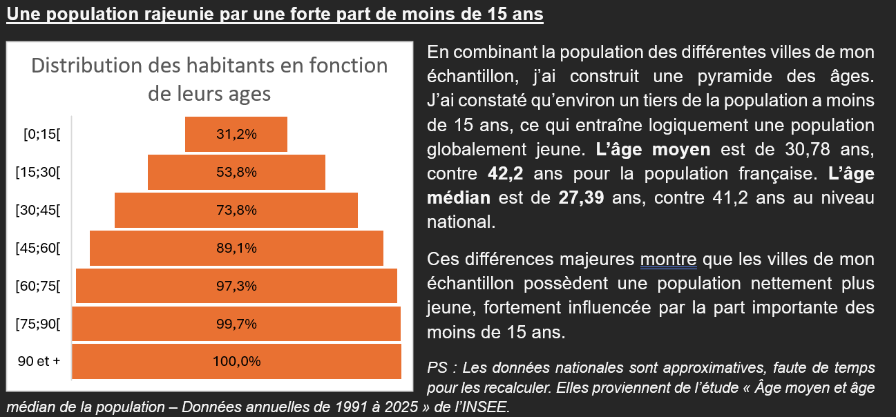
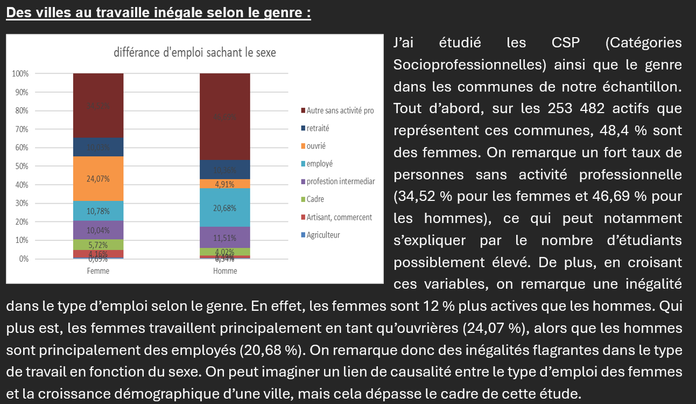
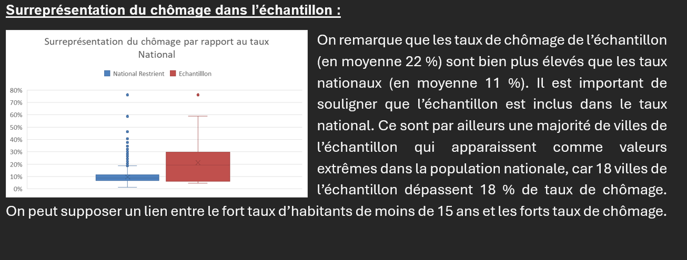

📊 SAÉ — Apprendre en situation la production de données en entreprise
Étude démographique sur le 99ᵉ centile des communes avec le plus fort taux de population de moins de 15 ans.
Nous avons eu des cours sur la démographie. Pour mettre en pratique ces nouvelles connaissances et nous faire comprendre la puissance de l'étude des données, nous avons eu ce projet à réaliser. Nous disposions de 2 jeux de données (issus du recensement de 2022) détaillant pour chaque commune : la structure de la population et les CSP+. À partir de ces données, nous devions isoler les communes avec le plus fort taux de moins de 15 ans, afin de fournir des recommandations pour encourager d'autres villes à avoir une population plus jeune.
Pour ma part, j'ai effectué la segmentation sur les communes de plus de 5 000 habitants situées dans le 99ᵉ centile. J'ai obtenu 32 communes. J'ai ensuite étudié différentes variables de ces communes afin de produire une analyse. Le rapport est malheureusement perdu en raison d'un problème de licence de l'université.
La principale difficulté résidait dans la compréhension des données et donc dans leur interprétation.



- Habitude à utiliser les capacités d'Excel pour manipuler et étudier des données.
- Compréhension de la variété de la démographie française et de ses différents paramètres.
- Capacité à communiquer les résultats d'une étude et à les remettre dans leur contexte.
- Usage d'une charte graphique adaptée afin de valoriser l'information communiquée.
- Compréhension des besoins d'un commanditaire dans un contexte réaliste et professionnel.
Comprendre l'intérêt des synthèses numériques et graphiques pour décrire une variable statistique.
Parmi les apprentissages critiques (éléments à maîtriser dans la formation, à dimension très académique), je pense que ce projet correspond le mieux à celui cité ci-dessus. Les graphiques ont deux utilités majeures : illustrer les analyses faites, mais aussi permettre de visualiser les phénomènes que l'on voulait étudier. C'est un excellent moyen de comprendre les variables statistiques avec la granularité souhaitée, à condition d'utiliser les bons graphiques.